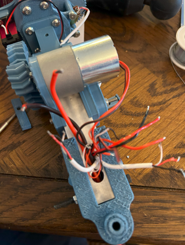
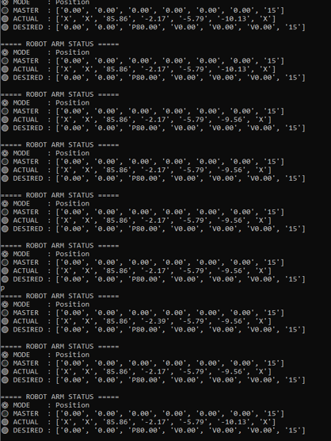

7-DOF Robotic Arm
Senior Design Project • Drexel University • 2025
Overview
Inspired by NASA’s RASC-AL challenge, my senior design team created a lunar maintenance rover with a modular advanced manipulator, a custom chassis, and distributed control — built for adaptability, repairability, and upgradeability.
This project was a test platform for modularity, control, and systems integration — not a hardened lunar system. Every element was designed with modularity in mind: only four wires (HV+/–, LV+/–) run from the chassis to the arm, distributing power to each joint’s independent controller. This minimized wiring complexity and enabled hot-swapping of components. While not space-grade, the prototype provided a hands-on validation environment for ideas in full-stack robotics.
Project Highlights

I was team leader and led all mechanical, electrical, coding, prototyping, and testing work. The rest of the team focused on documentation and outreach, while I built and integrated the actual hardware and software systems.
The concept was inspired by RASC-AL’s call for long-term lunar servicing platforms. We explored several directions before settling on a modular robotic arm mounted to a chassis. The arm’s modularity allows for easy upgrades and repairs — a feature that would be vital for years of service on the Moon. We decided to use ROS 2 to support autonomy and communication structure, and I built the entire stack to simulate real-world deployment.

Mechanical Design

We started by analyzing different joint layouts to minimize singularities. I calculated all forces, moments, and required torques based on a desired payload and arm reach. Then, I designed and rapidly prototyped each joint one by one.
The arm’s structure is built around a 1” x 1” aluminum tube spine, with each joint 3D-printed using PLA, PETG, or ABS depending on stress requirements. Joints are designed to be fully modular, each attaching independently to the central spine. I originally designed a 3D-printed harmonic drive to increase torque and reduce backlash, but it was cut due to time.


We completed J3–J6 + gripper before the deadline. Potentiometers were used for joint feedback due to budget constraints, and we calibrated them ourselves using regression to convert resistance to angle.
Special Note on J6 + Gripper

J6 was an axial joint requiring more than 270° rotation, so I geared down the potentiometer to achieve ~600° range. We used axial and radial bearings to fully constrain it, while keeping the joint hollow for wire passthrough to the servo-powered gripper.
Electronics
Each joint has its own microcontroller, powered by a shared 4-wire snake (HV+/– and LV+/–). Joints can be added or removed with no changes to the system — they just tap into the same power line and connect to the existing wireless network.
Joint Electronics

Each joint contains:
- ESP8266 microcontroller
- Potentiometer for angle feedback
- Motor driver + gearmotor
Chassis Electronics

The chassis contains 12V/24V supplies, 5V/3.3V buck converters, fuse protection, and a Raspberry Pi which acts as the central hub.
Software & Control

The robot uses a distributed system with a Raspberry Pi hosting the network and relaying commands via MQTT to each joint. The Pi can operate in position or velocity mode.
The Pi uses hostapd, dnsmasq, and mosquitto to run its own Wi-Fi network. ROS 2 is used for simulation and I/O, while MQTT handles real-time joint control. Input can come from a controller (velocity mode) or typed in (position mode).
Communication Protocol
MQTT messages follow the format [DR, DL, J3, J4, J5, J6, G]. The Raspberry Pi interprets joystick/controller data or terminal commands and formats desired position or velocity messages.
ESP Logic

Each ESP listens for its joint's value. If it’s 'P45.00', it runs PID to that angle. If it’s 'V0.65', it runs motor speed with soft stops. Feedback is sent back as current position.
Prototyping & Assembly
Joints were tested and assembled independently. We began from the gripper and moved backward to avoid integration issues. Each joint was flashed and PID-tuned before mounting.
Takeaways & Future Work
LuMAR is being handed off to future Drexel teams as a platform and teaching tool. Our advisor will use it to teach PID control. Future plans include:
- Adding J1/J2 for 7-DOF
- Improved drivetrain gearing
- End-effector swapping
- Full autonomy stack